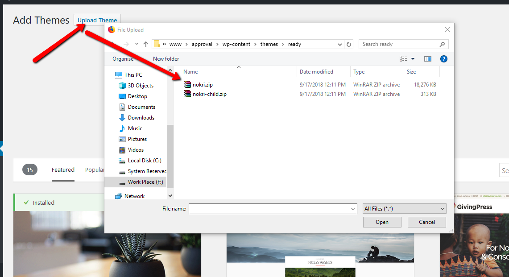
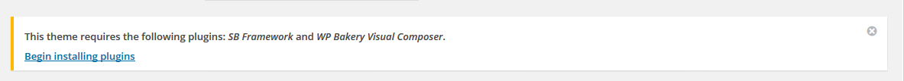
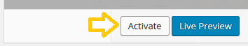
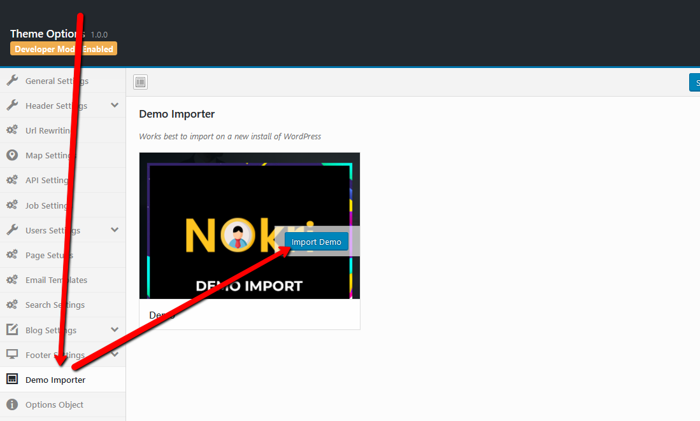
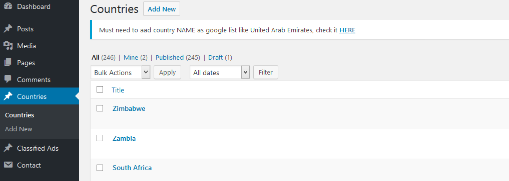
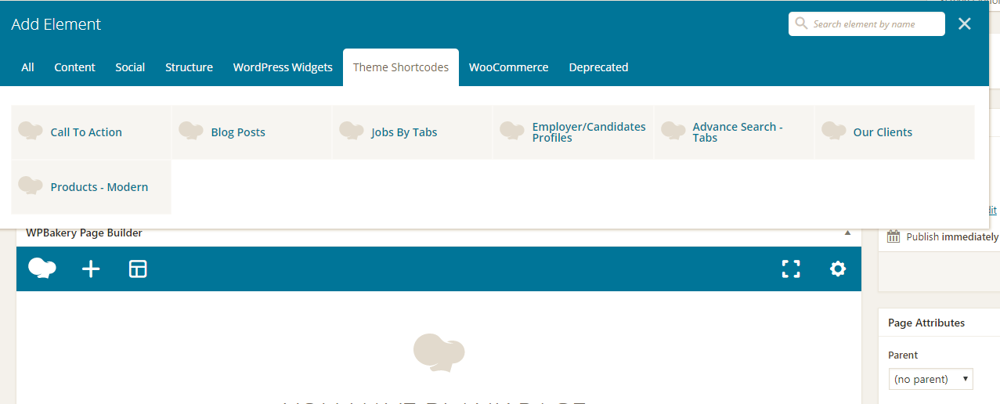
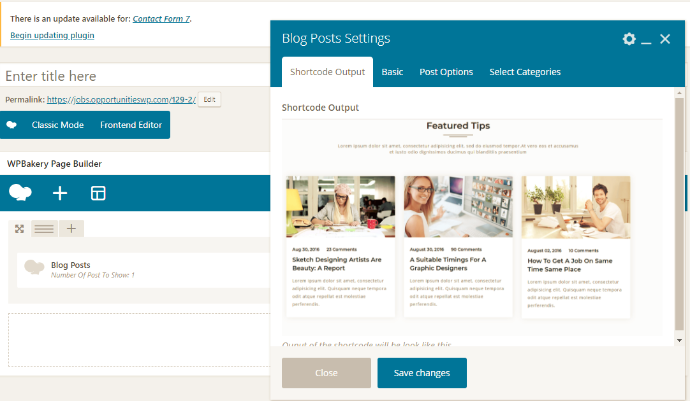

Installation
We would like to thank you for purchasing Nokri! We are very pleased you have chosen Nokri for your website, you will not be disappointed! Before you get started, please be sure to always check out these documentation files. We outline all kinds of good information, and provide you with all the details you need to use Nokri. Nokri can only be used with WordPress and we assume that you already have WordPress installed and ready to go. If you do not, please see our section on WordPress to help you get started.
Nokri responsive, multi-purpose, corporate, business, advisor, consulting, finance HTML/CSS template. It comes with 8 home variations with all necessary pages. Nokri template filled with extra functionality of modern web technologies. The clean design with latest version of Bootstrap framework makes its fit for anywhere.
It’s fully responsive design and clean was tested on all major handheld devices.Unlimited possibilities & flexible that will easily be able to support every site development.
contact@scriptsbundle.com
When you purchase our theme from Themeforest, you need to download the Nokri files from your Themeforest account. Navigate to your downloads tab on Themeforest and find Nokri. Click the download button to see the two options. The Main Files contain everything, the Installable WordPress Theme is just the installable WordPress theme file. Below is a full list of everything that is included when you download the main files, along with a brief description of each item.
- Nokri Theme Folder – contains the nokri.zip and nokri-child.zip wordpress theme. The child theme is only for users who make code changes.
WordPress Info
To install this theme you must have a working version of WordPress already installed. If you need help installing WordPress, follow the instructions in WordPress Codex or you can watch the Instructional Video created by Woo Themes. Below are all the useful links for WordPress information.

- WordPress Codex general info about WordPress and how to install on your server
- First Steps With WordPress general information that covers a wide variety of topics
- FAQ New To WordPress the most popular FAQ’s regarding WordPress
- WP101 Basix Training videos some great videos from WPTuts on WordPress
Nokri Theme Requirnments
To use Nokri, you must be running WordPress 4.0 or higher, PHP5 or higher, and mysql 5 or higher. We have tested it with Mac, Windows and Linux. Below are a list of items you should ensure your host can comply with.
- Check to ensure that your web host has the minimum requirements to run WordPress.
- Always make sure they are running the latest version of WordPress
- You can download the latest release of WordPress from official WordPress website
- Always create secure passwords FTP and Database
Hosting is more secure when PHP applications, like WordPress, are run using your account’s username instead of the server’s default shared username (www or www-data). The most common way for hosting companies to do this is using suPHP. Just ask your potential host if they run suPHP or something similar.
Theme Installation
You can install the theme in two ways: through WordPress, or via FTP. The nokri.zip file is the Installable WordPress Theme and what you need to use to get the theme installed.
Downloading The Main Files Gives You All The Content Listed Below
- Nokri Theme Folder contains the nokri.zip and nokri-child.zip wordpress theme. The child theme is only for users who make code changes.
Downloading The Installalable WordPress Theme Only Gives You The nokri.zip File
- nokri.zip this is the parent wordpress theme, install this via WordPress. If you install it via FTP then unzip it first and use the extracted folder.

Follow the steps below to install via WordPress.
Step 1 Navigate to Appearance > Themes.
Step 2 Click Add New and hit the Upload Theme button.
Step 3 Navigate to find the “nokri.zip” file on your computer and click “Install Now”
Step 4 Wait while the theme is uploaded and installed.
Step 5 Activate the newly installed theme. Go to Appearance > Themes and activate it.
Step 6 Then you will get a notification to activate the required plugins: SB Framework and WP Bakery Visual Composer.

Common Install Error: Are You Sure You Want To Do This?
If you get the “Are You Sure You Want To Do This” message when installing nokri.zip file via WordPress, it means you have an upload file size limit. Install the theme via FTP if this happens, or call your hosting company and ask them to increase the limit.
Follow the steps below to install via FTP.
Step 1 – Log into your hosting space via an FTP software
Step 2 – Unzip the nokri.zip file and ONLY use the extracted nokri theme folder
Step 3 – Upload the extracted Nokri theme folder into wp-content > themes folder
Step 4 – Activate the newly installed theme. Go to Appearance > Themes and activate it.
Theme Demo Data
When you first install any wordpress theme, it will not contain all the extra content that you might of seen in the live demo.
Go to Theme Option > Demo Importer Click in Import Demo button
*After installling the demo data you must need to set up api's in order to work the theme properly.
Child Theme
Child theme comes with this package. If you are going to make update in the theme. Then we suggest you to install the child theme and make change there. So that when you update the theme you changes don't get replaced. You can find the child theme nokri-child.zip in the installation file.
Nokri Theme Options - General
In general menu you can set the following options:
- Turn on/off breadcrumb.
- Upload Breadcrumb
- Trun on/off Admin bar from front end.
nokri Theme Options - Header
In header you can set the following options
- Trun on/off Registration Icon
- Trun on/off top bar.
- Upload header logo
nokri Theme Options - Jobs Settings
In Jobs settings menu you can set the following options
- Select job approval
- Select update approval
- Write job post note
- Select single job page
- Select job post page
- Add advertisement code
nokri Theme Options - Users Settings
In Users settings menu you can set the following options
- Turn on/off email to user
- Turn on/off welcome email to User
- Turn on/off new user email verification
- Ad image set limit
- Ad image max size
- Show Company/Candidate Per Page
nokri Theme Options - Dashboard Settings
In Page Setups settings menu you can set the following options
- You can set dashboard page
- You can set package page
nokri Theme Options - Email Templates Settings
In Email Templates menu you can set the following options
- New user email template subject for Admin
- New user email FROM for Admin
- New user email template for Admin
- New user email template subject
- New user email FROM
- New user email template
nokri Theme Options - Search Settings
In Search Settings menu you can set the following options
- Select search page
- Select Search Layout
nokri Theme Options - Blog Settings
In Blog menu you can set the following options
- You can set select blog lay out
- You can Select Side Bar
- You can set blog text
- You can set on/off Post Meta
- You can set on/off Date
- You can set on/off comments counts
In API Settings menu you can set the following options
- Need to put apis here
In Demo Data menu you can set the following options
You can import all the demo data with one click. (work best on new installication.)*After installling the demo data you must need to set up api's in order to work the theme properly.
nokri Other Options ( country )
To add a new country you need to add 2 things
- Country name like United States
- country code like US, UK
- For info please click here

nokri Other Options ( Posts )
No matter which method or methods you use to display your blog posts, the first thing you need to do is create the blog posts.Each blog post you make will be able to be displayed. And with the ability to assign custom categories to each post, you can easily display a set of posts based on category. See below for information on how to create blog posts.
Follow the Steps Below To Create A Blog Post
Step 1 – Navigate to Posts in your WordPress admin.
Step 2 – Click on Add New to make a new post. Create a title and insert your post content in the editing field.
Step 3 – Add Categories from the right side. To assign it to the post, check the box next to the Category name.
Step 4 – Add Tags from the right side. Type the name of the tag in the field, separate multiple tags with commas.
Step 5 – Once you are finished, click Publish to save the post.
nokri Other Options ( Pages )
To creat a new page you need to go to Pages and then Add New Page
nokri Other Options ( Widgets )
To add/setup widgets you need to goto widgets and add the widget in the required sidebar.
nokri Other Options ( Contact Form 7 )
We have included contact form 7 for more information check contact form 7 details Here
nokri Other Options ( Visual Composer )
We have included visual composer. For more information check visual composer documentation for more details Here
nokri Theme Shortcodes
There are 40+ shortcodes and many of the shortcode themself has different layout so that you can set them the way you want.
Every shortcodes includes a screen shot so that you can easily find out what shotcode you are going to add.
